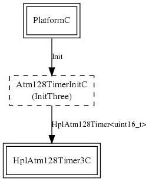

Internal mica-family timer component. Sets up hardware timer 3 to run at cpu clock / 8, at boot time. Assumes an ~8MHz CPU clock, replace this component if you are running at a radically different frequency.
